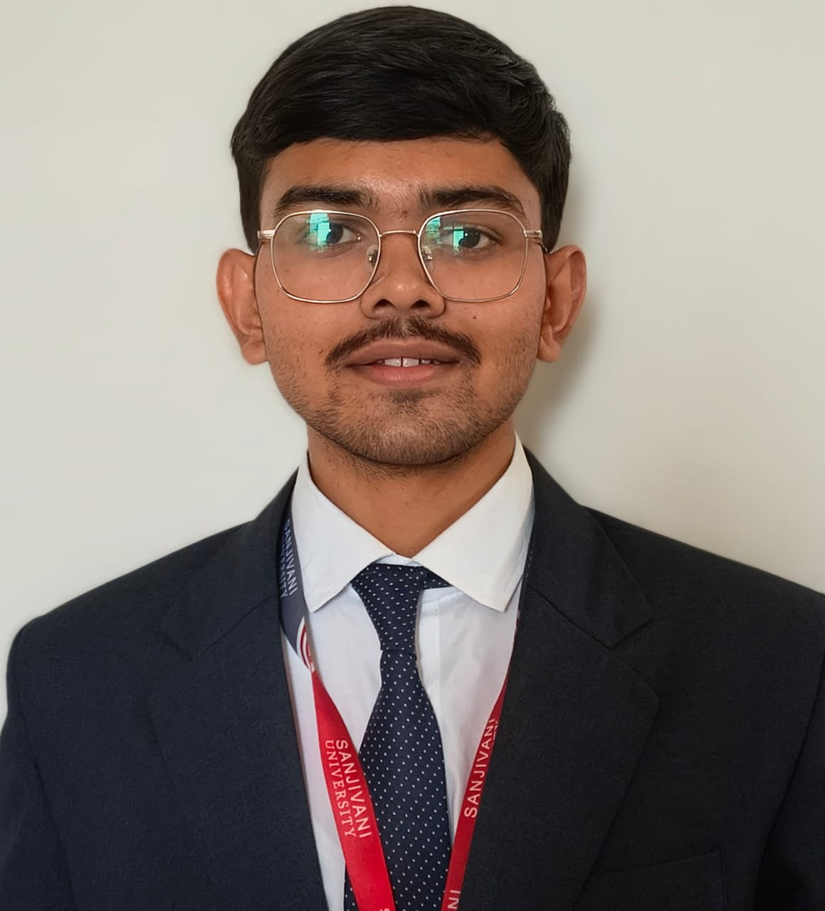

Sanket Pravin Dale
Integrated B.Tech CSE student, second year, Sanjivani University
I build desktop applications for image analysis, from hyperspectral region extraction to camera-based inspection. I’m looking for internships and research opportunities in computer vision, image processing and software development.

About me
I’m a second-year Integrated B.Tech Computer Science and Engineering student at Sanjivani University. Most of my project work involves turning image data into something people can inspect: a Grad-CAM overlay on a diseased leaf, a spectral graph for a selected region, or a size reading from a camera feed.
I work mainly in Python with PyQt and OpenCV. I’m also interested in cybersecurity and ethical hacking, and I’m looking for internships and research opportunities where I can keep building practical software and learn from experienced mentors.
Technical skills
Featured projects
Select a project to see its screenshots, features and technologies.
Research and technical experience
Hyperspectral imaging project work
Project work on hyperspectral imaging and spectral analysis. Mentor/supervisor: Dr. Arvind Mukundan.
Ethical hacking workshop
Participated in an ethical hacking workshop.
Cybersecurity exploration
Explored cybersecurity concepts and the Censys internet asset search platform.
Leadership and activities
Technical Head, Integrated B.Tech Department
Supported coordination of departmental technical activities and student initiatives.